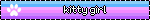
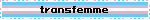
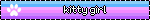
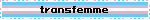

hello. my name is mia wren, and this is my homepage.
 


hello. my name is mia wren, and this is my homepage.
 
Hi, my name is Mia :-) I'm a 19 year old trans woman- she/her pronouns. I've been on estrogen since 12-12-2019. I'm located in South Africa- my timezone is GMT+2. I am also British, however, so if you see me talking about the UK, that's why! I'm passionate about open-source tech, history and historiography, Linux, and fantasy literature. I'm disabled, with fibromyalgia and medium-support-needs autism, so if I struggle with communication please forgive me! This site is hosted using GitHub Pages with a custom domain added.
You can reach me on Discord, @sigilmoons. Alternatively, on Matrix, here.
I'm a robot-aligned cat therian! I'm aiming to specialise into the field of Unix system administration, and I'm fairly knowledgeable about the workings of Linux. I run Arch (btw), and I'm very passionate about making free and open-source tech more widely accessible.